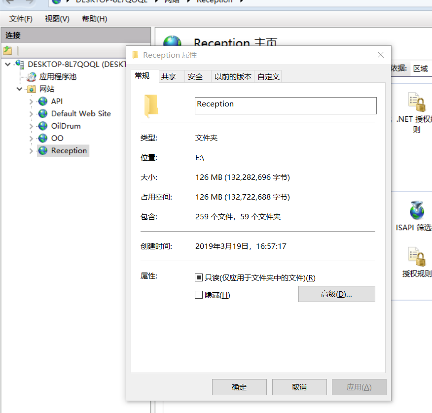
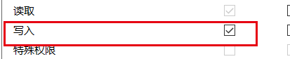

log4net在本地执行时候,日志正常写入,但是发布到服务器上的时候,日志就无法正常写入
解决方案:
1.文件权限
在发布到服务器上的时候,可能文件没有写入权限,导致日志无法正常写入
打开IIS

找到发布的文件->点击右键->编辑权限,出现该文件的属性
点击安全->编辑->找到IIS_IUSRS给他写入权限

2.没有log4net的文件配置
在配置的时候,有些人的配置文件不一样,有的是在web.config中配置,有的是新建文件log4net.config中配置
但是在发布的时候,发布包中没有log4net.config文件
这个时候只有我们手动将该文件复制到发布包中
3.属性更改
选择解决方案中的log4net.config，在属性–>复制到输出目录，选择始终复制
4.配置文件
配置文件中的错误,需要你检查每一个点,查看写入的路径有没有错误,或者是格式不对
需要仔细的检查每一个设置点,比较麻烦,在配置的时候要仔细